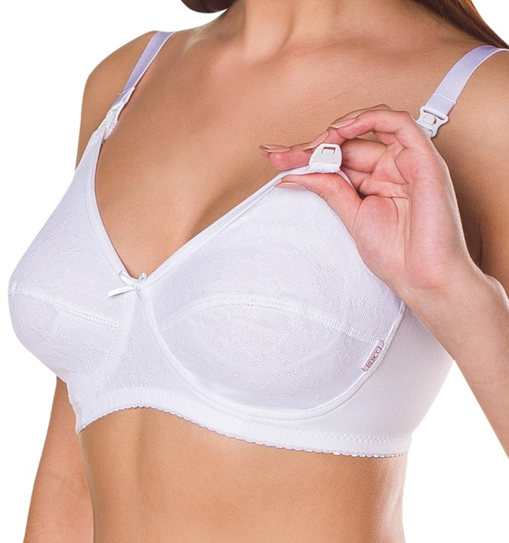

По материалам многоцентрового проспективного наблюдательного исследования Российского общества акушеров-гинекологов
«Опыт и перспективы применения бандажа у беременных и родильниц»
под руководством Президента РОАГ академика В. Н. Серова
Исследование проводилось с использованием специального белья торговой марки «ФЭСТ»
Дородовый бюстгальтер
При
ношении дородового
бюстгальтера ФЭСТ
снижается давление на грудь в период
ее увеличения,
так как сдавливание груди может привести
к появлению новообразований, снижается
вероятность возникновения мастита,
нарушения кровообращения, образования
стрий на коже молочных желез.
В дородовой период следует отказаться от неспециальных (обычных) бюстгальтеров, так как их ношение может привести к закупорке канальцев и риску инфицирования молочных желез.
Специальный бюстгальтер рекомендуется носить с третьего триместра беременности.
Перед выбором специального бюстгальтера проконсультируйтесь с врачом акушером-гинекологом.
Полностью результаты исследования можно посмотреть в разделе "Исследования РОАГ" на сайте www.mama-fest.com.
Послеродовый бюстгальтер
Бюстгальтер для кормления ФЭСТ обладает следующими качествами: хорошо поддерживает молочные железы, а также обеспечивает удобство самого процесса кормления.
Материалы, из которых сшит бюстгальтер для кормления, хорошо пропускают воздух, не задерживают влагу, не вызывают раздражения и аллергических реакций на коже, будучи при этом упруго-эластичными и приятными на ощупь. Хлопковые бюстгальтеры позволяют коже «дышать» и не собирают влагу у сосков, что важно для предупреждения инфекционных осложнений.
В период кормления следует отказаться от неспециальных (обычных) бюстгальтеров, так как их ношение может привести к закупорке канальцев и риску инфицирования молочных желез.
Чашечки бюстгальтера для кормления легко открываются и закрываются одной рукой. Внутренняя сторона чашечки бюстгальтера для кормления мягкая, выполнена из хлопка.
По заключению врачей при ношении бюстгальтера снижается вероятность:
- возникновения послеродового мастита — 15%;
- возникновения трещин сосков — 18,3%;
- уменьшения объема лактации — 10%;
- образования стрий на коже молочных желез — 18,3%.
Бюстгальтер для кормления рекомендуется носить с первого дня после родов.
Перед выбором бюстгальтера для кормления проконсультируйтесь с врачом акушером-гинекологом.
Полностью результаты исследования можно посмотреть в разделе "Исследования РОАГ" на сайте www.mama-fest.com.